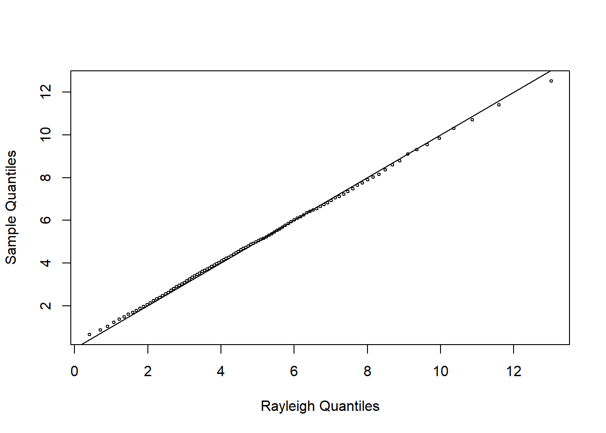
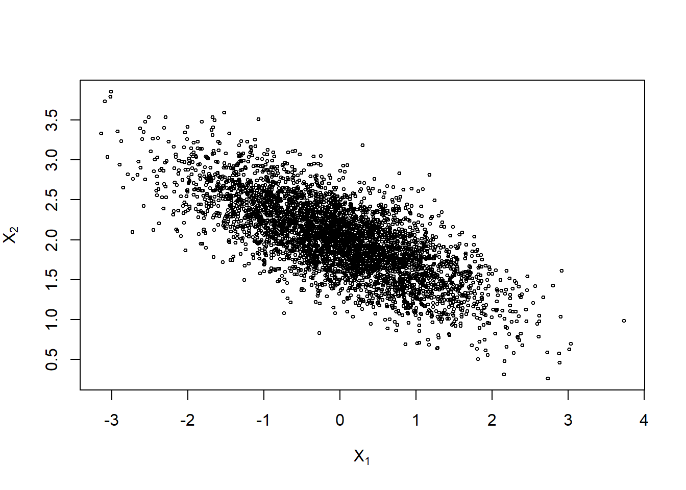

켤레 사전 분포처럼 분포함수 간에 관계가 있거나 함수가 간단한 형태의 경우 적분을 쉽게 할 수 있다. 하지만 복잡한 함수 형태이거나 high dimension인 경우 Monte carlo integration이나 numerical method를 이용한 적분 방법을 적용하기 힘들다. 이 때 사용하는 방법이 Markov chain Monte Carlo 방법이다.
Monte Carlo integration의 경우 independence sample을 뽑는데 high dimension인 경우 independence sample을 뽑는 것이 어렵다. 따라서 dependence sample을 뽑아서 이 문제를 해결해보자는 것이 Markov Chain Monte Carlo(MCMC)의 아이디어이다. 앞에 Markov Chain이 붙은 것은 dependence sample을 Markov Chain 구조에서 뽑기 때문이다. 이상적인 Markov Chain의 경우 특정 정칙 조건을 만족해야한다.
Markov Chain을 따르는 \(X\)를 발생시키기 위해서는 regularity conditions을 만족해야 한다. 일반적으로 target distribution과 같은 support set을 갖는 proposal distribution의 경우 regularity conditions를 만족한다. proposal distribution이 regularity condition을 만족하는 경우 Metropolis-Hastings chain의 stationary distribution은 taget distribution이 된다.
Metropolis-Hasting algorithm을 이용해서 Rayleigh 분포에서 표본을 추출하기 해보자.
\(f(x) = \frac{x}{\sigma^2}e^\frac{-x^2}{2\sigma^2}\), \(x\ge0\), \(\sigma>0\)
\(Y\)가 accept 될 확률은 다음과 같다. \(\alpha (X_t, Y) = min(1, \frac{f(Y)g(X_t|Y)}{f(X_t)g(Y|X_t)})\)
rayleigh <- function(x, sigma){
return ((x/sigma^2)*exp(-x^2/(2*sigma^2))) # Rayleigh distribution를 함수로 정의
}
m <- 10000
sigma <- 4
x <- numeric(m)
x[1] <- rchisq(1, df = 1) # initial value
k <- 0
u <- runif(m) # generate u from U(0,1)
for (i in 2:m) {
xt <- x[i-1]
y <- rchisq(1, df = xt)
num <- rayleigh(y, sigma)*dchisq(xt, df = y) # posterior theta t
den <- rayleigh(xt, sigma)*dchisq(y, df = xt) # posterior theta t-1
if (u[i] <= num/den) {
x[i] <- y # accept
}else {
x[i] <- xt # reject
k <- k+1
}
}
k # reject된 갯수 ## [1] 4126실제 Rayleigh 분포와 같은지를 비교하기 위해 QQplot을 그리면 다음과 같다.
b <- 2001
y <- x[b:m]
a <- ppoints(100)
QR <- sigma*sqrt(-2*log(1-a))
Q <- quantile(y, a)
qqplot(QR, Q, main = '', cex = 0.5, xlab = 'Rayleigh Quantiles', ylab = 'Sample Quantiles')
abline(0,1)
proposal distribution을 gamma distribution으로 변경할 경우 다음과 같다.
Matropolis Hastings sampler는 Metropolis sampler의 일반화이다. Metropolis sampler는 Metropolis algorithm에서 proposal distribution이 symmetric일 때를 의미한다.
proposal distribution이 symmetric이므로
\(g(X|Y) = g(Y|X)\)
를 만족한다.
따라서 기존의 Metropolis Hastings sampler 식은 조건부 분포 \(g\)가 약분되므로 식이 간소화된다. \(r(X_t, Y) = \frac{f(Y)g(X_t|Y)}{f(X_t)g(Y|X_t)} = \frac{f(Y)}{f(X_t)}\)
Random Walk Metropolis sampler는 Metropolis Sampler의 special case이다. proposal distribution은 symmetric이며, \(g(Y|X_t) = g(X_t - Y)\)로 정의한다.
random increment \(Z\)를 \(g(\cdot)\)로 부터 발생시킨다.
\(Y=X_t+Z\) 로 정의한다.
\(r(X_t, Y) = \frac{f(Y)}{f(X_t)}\)를 계산한다.
target distribution과 support set이 같은 임의의 proposal distribution \(g(\cdot|X_t)\)를 선정한다. proposal distribution은 symmetric이며, \(g(Y|X_t) = g(X_t - Y)\)로 정의한다.
random increment \(Z\)를 \(g(\cdot)\)로 부터 발생시키고, \(Y=X_t+Z\) 로 정의한다.
chain이 정상 분포로 수렴할 때까지 다음의 과정을 반복한다.
independence sampler는 Metropolis Hastings Sampler의 special case이다. independence sampler에서 proposal distribution은 다음과 같이 정의된다.
\(g(Y|X_t) = g(Y)\)
즉, independence sampler는 chain의 이전 값에 의존하지 않는다.
independence sampler는 proposal density가 target density에 가깝게 match될 경우에 잘 동작한다. 하지만 이러한 경우는 거의 없으며, independence sampler는 잘 동작하지 않는 경우가 많다. 따라서 단독으로 쓰이는 경우는 없으며, 보통 hybrid MCMC method에서 사용한다.
Gibbs sampler도 Metropolis Hastings Sampler의 special case이다. target distribution이 multivariate distribution일 때 주로 적용한다. Gibbs sampler는 일변량 조건부 분포를 계산할 수 있고, 쉽게 simulation이 가능한 경우에 사용할 수 있다.
\(X_{(-j)} = (X_1, ... , X_{j-1}, X_{j+1}, ... , X_d)\)
\(f(x_1, x_2, ..., x_k)\) : joint pdf를 계산하기 어려움 \(f(x_1) = \int f(x_1, x_2, ..., x_k)\, dx_2...dx_d\) : marginal pdf를 계산하기 어려움 \(f(x_1|x_2,...,x_d)\) : conditional pdf는 구하기 쉬움
간단하게 multivariate distribution일 때를 예로 들면
\(f(x, y)\) : joint pdf를 계산하기 어려움 \(f(x) = \int f(x,y)\, dy\) : marginal pdf를 계산하기 어려움 \(f(y) = \int f(x,y)\, dx\) \(f(x|y)\), \(f(y|x)\) : conditional pdf는 구하기 쉬움
Gibbs sampler를 직관적으로 설명하면
즉, Gibbs sampler의 핵심은 conditinal pdf로부터 joint pdf or marginal pdf를 쉽게 계산할 수 있다는 것이다. 핵심이다.
\(X_{(-j)} = (X_1, ... , X_{j-1}, X_{j+1}, ... , X_d)\)
\(f(x,y) = {n \choose x}y^{x+a-1}(1-y)^{n-x+b-1}\), \(x=0,1,....,n\), \(0 \le y \le 1\) \(X|y \sim Bin(n, y)\), \(Y|x \sim Beta(x+\alpha, n-x+\beta)\)
Gibbs sampling의 목적은 conditional pdf로 모르는 형태의 joint pdf와 marginal pdf를 구하는 것이다. 따라서 \(f(x,y)\)는 실제로는 beta-binomial 분포로 구할 수 있지만 gibbs sampling을 위해서 \(f(x,y)\)를 모르고 \(f(x|y)\)와 \(f(y|x)\)는 안다고 가정한다.
추가적으로 \((X^*(t), Y^*(t))\)에 대해서 일정량을 burn in 하는데 이는 초기값의 영향을 없애기 위해서이다. burn in의 비율은 임의로 설정한다.
N <- 500
burn <- 100
n <- 16
alpha <- 2
beta <- 4
x <- rep(0, N)
y <- rep(0, N)
x[1] <- rbinom(1, prob = 0.5, size = n)
y[1] <- rbeta(1, x[1]+alpha, n-x[1]+beta)
for (i in 2:N) {
x[i] <- rbinom(1, prob = y[i-1], size = n)
y[i] <- rbeta(1, x[i]+alpha, n-x[i]+beta)
}
burn_x <- x[(burn+1):N]N <- 5000
burn <- 1000
X <- matrix(0, N, 2)
rho <- -.75
mu1 <- 0
mu2 <- 2
sigma1 <- 1
sigma2 <- .5
s1 <- sqrt(1-rho^2)*sigma1
s2 <- sqrt(1-rho^2)*sigma2
X[1, ] <- c(mu1, mu2) # 초기값
for (i in 2:N) {
x2 <- X[i-1, 2] # x2가 주어짐
m1 <- mu1 + rho * (x2 - mu2) * sigma1/sigma2 # x2가 주어졌을 때 x1 조건부 분포의 평균
X[i, 1] <- rnorm(1, m1, s1) # 조건부 분포로 생성된 x1 업데이트
x1 <- X[i, 1]
m2 <- mu2 + rho * (x1 - mu1) * sigma2/sigma1 # x1이 주어졌을 때 x2 조건부 분포의 평균
X[i, 2] <- rnorm(1, m2, s2) # 조건부 분포로 생성된 x1 업데이트
}
b <- burn + 1 # 임의로 부여한 initial value의 효과를 없앰.
x <- X[b:N, ] # 1000개 버림
colMeans(x) # 0, 2에 거의 근사 ## [1] -0.02010863 2.01351264cov(x)## [,1] [,2]
## [1,] 0.9383263 -0.3451543
## [2,] -0.3451543 0.2390855cor(x) # rho = -0.75에 거의 근사 ## [,1] [,2]
## [1,] 1.0000000 -0.7287183
## [2,] -0.7287183 1.0000000plot(x, main = '', cex = 0.5, xlab = bquote(X[1]), ylab = bquote(X[2]), ylim = range(x[, 2]))